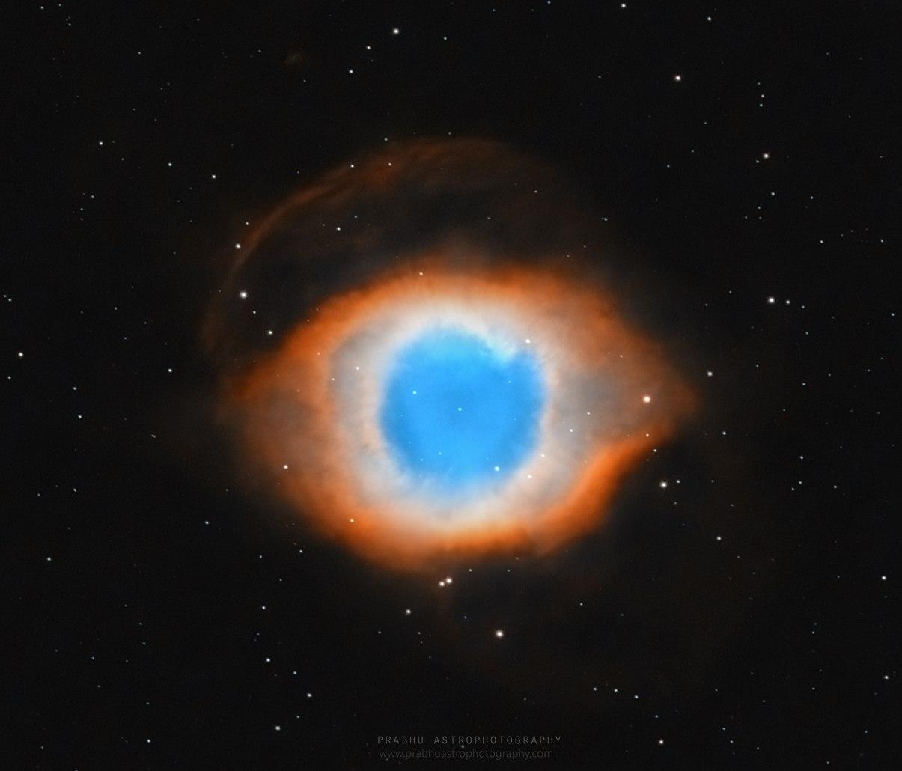

Welcome to Bangalore Astronomical Society!
We are a group of volunteers working for the promotion of
astronomy as a hobby as well as a science.
What we do
Check out this presentation to learn more about BAS activities and what our members do.
We
- provide an online platform for astronomy enthusiasts,
- conduct star parties at dark sites,
- conduct public outreach programmes in and around Bangalore,
- engage with the public through both traditional and social media to promote astronomy,
- organize lectures (both online and offline) to enhance our fellow hobbyists' knowledge.
Join the discussion!
We do not have formal memberships. Our primary channels of communication are our Telegram Group and Google Groups. All are welcome to join them.
The chat groups are very active! You do not have to be in Bangalore, or even in India to join! Feel free to post your questions about the universe, astronomy, telescopes, star-gazing, observing, astrophotography etc. in either group.
Watch out for event announcements pinned on the Telegram group and posted to the Google group.
To fight spam, we require that you fill out a form to obtain the Telegram link. We apologize for this inconvenience.
Star Parties
We orchestrate excursions to the dark skies of Coorg during the clear new moon periods, usually December — March, where we share the joy of being under a dark sky and looking at deep-sky objects through powerful telescopes!
Our extremely popular star parties are entirely volunteer-driven and not-for-profit. Pre-registration is announced on our Telegram group, about 2—3 weeks in advance. Spots are limited by accommodation capacity and the weekend nights generally get booked out very quickly!
To get an idea of what happens at a star party, take a look at this video.
Astronomy Webinars!
BAS conducted many webinars to enable people to make productive use of times during COVID-19 lockdowns. The webinars have been recorded and posted on our YouTube channel.
Some video recordings are featured below.
If you are interested in attending these sessions live, check our Google Group for notifications and details on how to join! They are free and no registration is necessary.
Call for volunteers
BAS needs your help to grow! We are always looking for volunteers to help with various activities.
If you wish to volunteer, please indicate your interest on the Telegram group and an admin will help you out.
Featured videos
We have a lot of astronomy content on our YouTube channel. Check it out for more such videos!Know Your Stars: An introduction to the night sky for newbie amateur astronomers.
Simple Experiments that Tell a Lot: Experiments in Physics and Astronomy that had massive contributions to our understanding of the universe.
How to Photograph Planets: Equipment, Techniques & More
Outreach Session for Rural School Students
Activities for Indian Institute of Astrophysics' National Science Day celebrations
BAS Star Party preview!
Gallery
Selected photos of the night sky shot by Bangaloreans and friends, and of events by BAS and its members. All pictures are used with permission of the creator.
Star trails around the north pole as seen behind Pumori mountain (7161m) from Gorakshep, Nepal (5164m).
Copyright © 2020 Keerthi Kiran.

Sightseeing after a star party in Hampi, ca. 2008.
Copyright © 2008 Naveen Nanjundappa.
.jpg)
Reflection nebula M78, and Barnard's Loop (emission nebula). Shot from Koratagere and Coorg
Copyright © 2014 Subhankar Saha.

Public viewing of the Venus Transit of 2012
Copyright © 2012 Keerthi Kiran.


The winter Milky Way, shot from Talakaveri, Coorg.
Copyright © 2020 Udayan Pandharipande.

Star party at Coorg in February 2020.
Copyright © 2020 Subhankar Saha.

Helix nebula in HOO palette (shows emissions from Hydrogen and Oxygen gas).
Copyright © 2020 Prabhakaran S. Kutti.